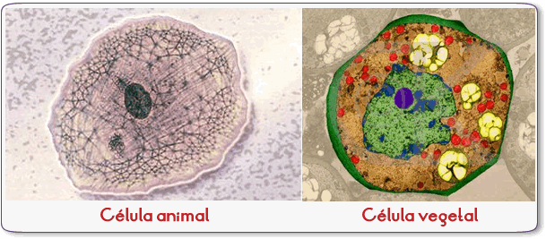
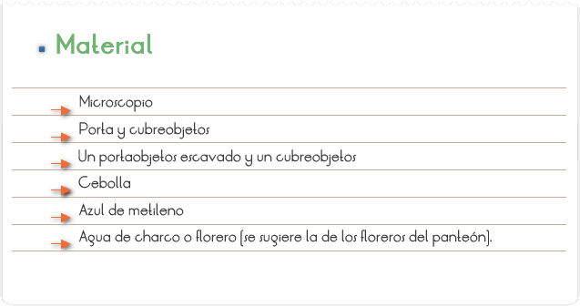
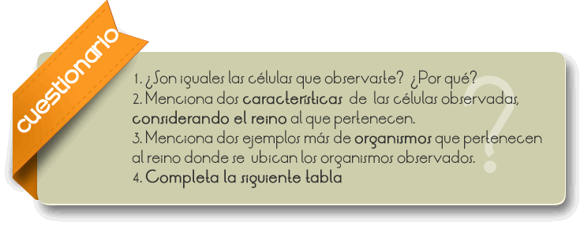
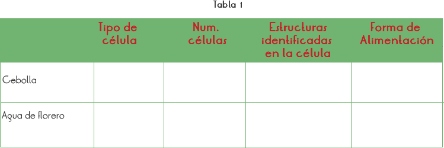

La célula (del latín cellula, diminutivo de cella, hueco) es la unidad morfológica y fisiológica esencial que compone a todo ser vivo.1 De acuerdo a la teoría celular, es además la estructura anatómica y funcional fundamental de la materia viva.
La célula es una unidad mínima de un organismo capaz de actuar de manera autónoma. Todos los organismos vivos están formados por células, y en general se acepta que ningún organismo es un ser vivo si no consta al menos de una célula.

Reconocer y comprobar que los seres vivos estamos formados por células.

1. Cortar una capa de la cebolla, y con mucho cuidado desprender la epidermis (parte transparente y delgada que se encuentra entre una capa de cebolla y otra).
2. Poner en el portaobjetos una gota de agua y colocar la epidermis de la cebolla y agregar una gota de azul de metileno.
3. Ahora realiza tu observación con el objetivo de menor aumento y dibuja lo mas parecido posible lo que observaste.
4. Coloca una gota de agua de florero en un portaobjetos escavado y coloca el cubreobjetos.
5. Realiza tu observación con el objetivo de menor aumento y dibuja.


La célula es una unidad mínima de un organismo capaz de actuar de manera autónoma. Todos los organismos vivos están formados por células, y en general se acepta que ningún organismo es un ser vivo si no consta al menos de una célula. Algunos organismos microscópicos, como bacterias y protozoos, son células únicas, mientras que los animales y plantas están formados por muchos millones de células organizadas en tejidos y órganos.